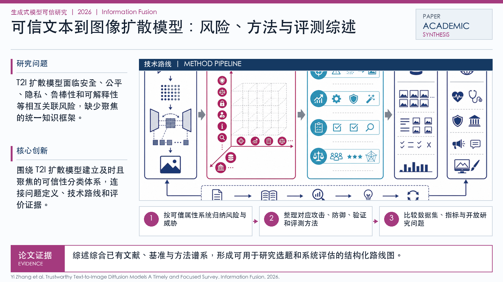

Problem
解决的问题
T2I 扩散模型面临安全、公平、隐私、鲁棒性和可解释性等相互关联风险，缺少聚焦的统一知识框架。
Research on Generative Models · 2026 · Information Fusion
Trustworthy Text-to-Image Diffusion Models A Timely and Focused Survey
Problem
T2I 扩散模型面临安全、公平、隐私、鲁棒性和可解释性等相互关联风险，缺少聚焦的统一知识框架。
Value
综述综合已有文献、基准与方法谱系，形成可用于研究选题和系统评估的结构化路线图。
Paper-grounded Academic Summary
该代表页依据原文摘要、贡献段与方法图注生成。方法视觉由 ImageGen 按论文证据逐篇绘制，中文研究问题、技术路线、创新点与实验结论采用确定性排版，以保证内容与字符准确。
打开原文 PDF
Technical Route
Innovation